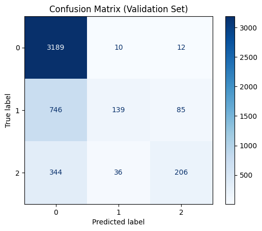
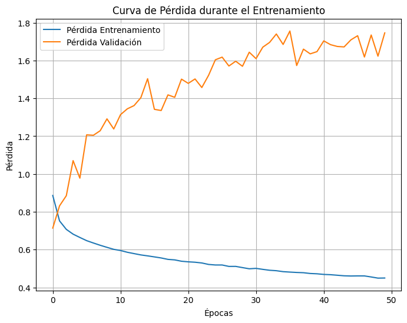
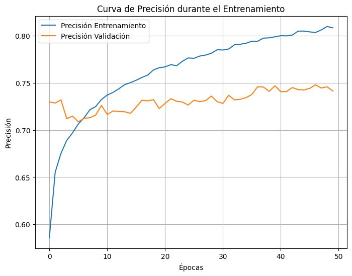
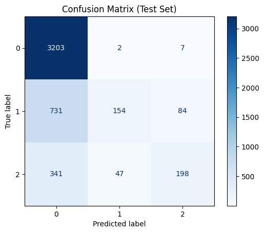

<!DOCTYPE html>


<html lang="en" data-content_root="./" >

  <head>
    <meta charset="utf-8" />
    <meta name="viewport" content="width=device-width, initial-scale=1.0" /><meta name="viewport" content="width=device-width, initial-scale=1" />

    <title>MLP &#8212; Proyecto Predición de pagos</title>
  
  
  
  <script data-cfasync="false">
    document.documentElement.dataset.mode = localStorage.getItem("mode") || "";
    document.documentElement.dataset.theme = localStorage.getItem("theme") || "";
  </script>
  <!--
    this give us a css class that will be invisible only if js is disabled
  -->
  <noscript>
    <style>
      .pst-js-only { display: none !important; }

    </style>
  </noscript>
  
  <!-- Loaded before other Sphinx assets -->
  <link href="_static/styles/theme.css?digest=8878045cc6db502f8baf" rel="stylesheet" />
<link href="_static/styles/pydata-sphinx-theme.css?digest=8878045cc6db502f8baf" rel="stylesheet" />

    <link rel="stylesheet" type="text/css" href="_static/pygments.css?v=03e43079" />
    <link rel="stylesheet" type="text/css" href="_static/styles/sphinx-book-theme.css?v=a3416100" />
    <link rel="stylesheet" type="text/css" href="_static/togglebutton.css?v=13237357" />
    <link rel="stylesheet" type="text/css" href="_static/copybutton.css?v=76b2166b" />
    <link rel="stylesheet" type="text/css" href="_static/mystnb.4510f1fc1dee50b3e5859aac5469c37c29e427902b24a333a5f9fcb2f0b3ac41.css?v=be8a1c11" />
    <link rel="stylesheet" type="text/css" href="_static/sphinx-thebe.css?v=4fa983c6" />
    <link rel="stylesheet" type="text/css" href="_static/sphinx-design.min.css?v=95c83b7e" />
  
  <!-- So that users can add custom icons -->
  <script src="_static/scripts/fontawesome.js?digest=8878045cc6db502f8baf"></script>
  <!-- Pre-loaded scripts that we'll load fully later -->
  <link rel="preload" as="script" href="_static/scripts/bootstrap.js?digest=8878045cc6db502f8baf" />
<link rel="preload" as="script" href="_static/scripts/pydata-sphinx-theme.js?digest=8878045cc6db502f8baf" />

    <script src="_static/documentation_options.js?v=9eb32ce0"></script>
    <script src="_static/doctools.js?v=9a2dae69"></script>
    <script src="_static/sphinx_highlight.js?v=dc90522c"></script>
    <script src="_static/clipboard.min.js?v=a7894cd8"></script>
    <script src="_static/copybutton.js?v=f281be69"></script>
    <script src="_static/scripts/sphinx-book-theme.js?v=887ef09a"></script>
    <script>let toggleHintShow = 'Click to show';</script>
    <script>let toggleHintHide = 'Click to hide';</script>
    <script>let toggleOpenOnPrint = 'true';</script>
    <script src="_static/togglebutton.js?v=4a39c7ea"></script>
    <script>var togglebuttonSelector = '.toggle, .admonition.dropdown';</script>
    <script src="_static/design-tabs.js?v=f930bc37"></script>
    <script>const THEBE_JS_URL = "https://unpkg.com/thebe@0.8.2/lib/index.js"; const thebe_selector = ".thebe,.cell"; const thebe_selector_input = "pre"; const thebe_selector_output = ".output, .cell_output"</script>
    <script async="async" src="_static/sphinx-thebe.js?v=c100c467"></script>
    <script>var togglebuttonSelector = '.toggle, .admonition.dropdown';</script>
    <script>const THEBE_JS_URL = "https://unpkg.com/thebe@0.8.2/lib/index.js"; const thebe_selector = ".thebe,.cell"; const thebe_selector_input = "pre"; const thebe_selector_output = ".output, .cell_output"</script>
    <script>DOCUMENTATION_OPTIONS.pagename = 'mlp_balanced';</script>
    <script src="https://cdnjs.cloudflare.com/ajax/libs/require.js/2.3.4/require.min.js"></script>
    <link rel="index" title="Index" href="genindex.html" />
    <link rel="search" title="Search" href="search.html" />
    <link rel="next" title="BenchMark" href="bench.html" />
    <link rel="prev" title="TabNet Balanced" href="tabnet_balanced.html" />
  <meta name="viewport" content="width=device-width, initial-scale=1"/>
  <meta name="docsearch:language" content="en"/>
  <meta name="docsearch:version" content="" />
  </head>
  
  
  <body data-bs-spy="scroll" data-bs-target=".bd-toc-nav" data-offset="180" data-bs-root-margin="0px 0px -60%" data-default-mode="">

  
  
  <div id="pst-skip-link" class="skip-link d-print-none"><a href="#main-content">Skip to main content</a></div>
  
  <div id="pst-scroll-pixel-helper"></div>
  
  <button type="button" class="btn rounded-pill" id="pst-back-to-top">
    <i class="fa-solid fa-arrow-up"></i>Back to top</button>

  
  <dialog id="pst-search-dialog">
    
<form class="bd-search d-flex align-items-center"
      action="search.html"
      method="get">
  <i class="fa-solid fa-magnifying-glass"></i>
  <input type="search"
         class="form-control"
         name="q"
         placeholder="Search this book..."
         aria-label="Search this book..."
         autocomplete="off"
         autocorrect="off"
         autocapitalize="off"
         spellcheck="false"/>
  <span class="search-button__kbd-shortcut"><kbd class="kbd-shortcut__modifier">Ctrl</kbd>+<kbd>K</kbd></span>
</form>
  </dialog>

  <div class="pst-async-banner-revealer d-none">
  <aside id="bd-header-version-warning" class="d-none d-print-none" aria-label="Version warning"></aside>
</div>

  
    <header class="bd-header navbar navbar-expand-lg bd-navbar d-print-none">
    </header>
  

  <div class="bd-container">
    <div class="bd-container__inner bd-page-width">
      
      
      
      <dialog id="pst-primary-sidebar-modal"></dialog>
      <div id="pst-primary-sidebar" class="bd-sidebar-primary bd-sidebar">
        

  
  <div class="sidebar-header-items sidebar-primary__section">
    
    
    
    
  </div>
  
    <div class="sidebar-primary-items__start sidebar-primary__section">
        <div class="sidebar-primary-item">

  
    
  

<a class="navbar-brand logo" href="intro.html">
  
  
  
  
  
    
    
      
    
    
    
    
  
  
</a></div>
        <div class="sidebar-primary-item">

<button class="btn search-button-field search-button__button pst-js-only" title="Search" aria-label="Search" data-bs-placement="bottom" data-bs-toggle="tooltip">
 <i class="fa-solid fa-magnifying-glass"></i>
 <span class="search-button__default-text">Search</span>
 <span class="search-button__kbd-shortcut"><kbd class="kbd-shortcut__modifier">Ctrl</kbd>+<kbd class="kbd-shortcut__modifier">K</kbd></span>
</button></div>
        <div class="sidebar-primary-item"><nav class="bd-links bd-docs-nav" aria-label="Main">
    <div class="bd-toc-item navbar-nav active">
        
        <ul class="nav bd-sidenav bd-sidenav__home-link">
            <li class="toctree-l1">
                <a class="reference internal" href="intro.html">
                    Proyecto Predicción de Pagos FBV
                </a>
            </li>
        </ul>
        <ul class="current nav bd-sidenav">
<li class="toctree-l1"><a class="reference internal" href="main.html"><em><strong>Exploratory Analysis Data</strong></em></a></li>
<li class="toctree-l1"><a class="reference internal" href="cart.html"><em><strong>Cart</strong></em></a></li>
<li class="toctree-l1"><a class="reference internal" href="random_forest.html"><em><strong>Random Forest</strong></em></a></li>
<li class="toctree-l1"><a class="reference internal" href="knn.html"><em><strong>KNN</strong></em></a></li>
<li class="toctree-l1"><a class="reference internal" href="svc.html"><em><strong>SVC</strong></em></a></li>
<li class="toctree-l1"><a class="reference internal" href="xgboost.html"><em><strong>XG-Boost</strong></em></a></li>
<li class="toctree-l1"><a class="reference internal" href="lgbm.html"><em><strong>LGBM</strong></em></a></li>
<li class="toctree-l1"><a class="reference internal" href="tabnet.html"><em><strong>TabNet</strong></em></a></li>
<li class="toctree-l1"><a class="reference internal" href="mlp.html"><em><strong>MLP</strong></em></a></li>
<li class="toctree-l1"><a class="reference internal" href="cart_balanced.html"><em><strong>Cart Balanced</strong></em></a></li>
<li class="toctree-l1"><a class="reference internal" href="random_forest_balanced.html"><em><strong>Random Forest Balanced</strong></em></a></li>
<li class="toctree-l1"><a class="reference internal" href="xgboost_balanced.html"><em><strong>XG-Boost Balanced</strong></em></a></li>
<li class="toctree-l1"><a class="reference internal" href="tabnet_balanced.html"><em><strong>TabNet Balanced</strong></em></a></li>
<li class="toctree-l1 current active"><a class="current reference internal" href="#"><em><strong>MLP</strong></em></a></li>
<li class="toctree-l1"><a class="reference internal" href="bench.html"><em><strong>BenchMark</strong></em></a></li>
<li class="toctree-l1"><a class="reference internal" href="Variables.html"><strong><em>Perfiles</em></strong></a></li>
</ul>

    </div>
</nav></div>
    </div>
  
  
  <div class="sidebar-primary-items__end sidebar-primary__section">
      <div class="sidebar-primary-item">
<div id="ethical-ad-placement"
      class="flat"
      data-ea-publisher="readthedocs"
      data-ea-type="readthedocs-sidebar"
      data-ea-manual="true">
</div></div>
  </div>


      </div>
      
      <main id="main-content" class="bd-main" role="main">
        
        

<div class="sbt-scroll-pixel-helper"></div>

          <div class="bd-content">
            <div class="bd-article-container">
              
              <div class="bd-header-article d-print-none">
<div class="header-article-items header-article__inner">
  
    <div class="header-article-items__start">
      
        <div class="header-article-item"><button class="sidebar-toggle primary-toggle btn btn-sm" title="Toggle primary sidebar" data-bs-placement="bottom" data-bs-toggle="tooltip">
  <span class="fa-solid fa-bars"></span>
</button></div>
      
    </div>
  
  
    <div class="header-article-items__end">
      
        <div class="header-article-item">

<div class="article-header-buttons">


<div class="dropdown dropdown-source-buttons">
  <button class="btn dropdown-toggle" type="button" data-bs-toggle="dropdown" aria-expanded="false" aria-label="Source repositories">
    <i class="fab fa-github"></i>
  </button>
  <ul class="dropdown-menu">
      
      
      
      <li><a href="https://github.com/executablebooks/jupyter-book" target="_blank"
   class="btn btn-sm btn-source-repository-button dropdown-item"
   title="Source repository"
   data-bs-placement="left" data-bs-toggle="tooltip"
>
  

<span class="btn__icon-container">
  <i class="fab fa-github"></i>
  </span>
<span class="btn__text-container">Repository</span>
</a>
</li>
      
      
      
      
      <li><a href="https://github.com/executablebooks/jupyter-book/issues/new?title=Issue%20on%20page%20%2Fmlp_balanced.html&body=Your%20issue%20content%20here." target="_blank"
   class="btn btn-sm btn-source-issues-button dropdown-item"
   title="Open an issue"
   data-bs-placement="left" data-bs-toggle="tooltip"
>
  

<span class="btn__icon-container">
  <i class="fas fa-lightbulb"></i>
  </span>
<span class="btn__text-container">Open issue</span>
</a>
</li>
      
  </ul>
</div>


<div class="dropdown dropdown-download-buttons">
  <button class="btn dropdown-toggle" type="button" data-bs-toggle="dropdown" aria-expanded="false" aria-label="Download this page">
    <i class="fas fa-download"></i>
  </button>
  <ul class="dropdown-menu">
      
      
      
      <li><a href="_sources/mlp_balanced.ipynb" target="_blank"
   class="btn btn-sm btn-download-source-button dropdown-item"
   title="Download source file"
   data-bs-placement="left" data-bs-toggle="tooltip"
>
  

<span class="btn__icon-container">
  <i class="fas fa-file"></i>
  </span>
<span class="btn__text-container">.ipynb</span>
</a>
</li>
      
      
      
      
      <li>
<button onclick="window.print()"
  class="btn btn-sm btn-download-pdf-button dropdown-item"
  title="Print to PDF"
  data-bs-placement="left" data-bs-toggle="tooltip"
>
  

<span class="btn__icon-container">
  <i class="fas fa-file-pdf"></i>
  </span>
<span class="btn__text-container">.pdf</span>
</button>
</li>
      
  </ul>
</div>


<button onclick="toggleFullScreen()"
  class="btn btn-sm btn-fullscreen-button"
  title="Fullscreen mode"
  data-bs-placement="bottom" data-bs-toggle="tooltip"
>
  

<span class="btn__icon-container">
  <i class="fas fa-expand"></i>
  </span>

</button>


<button class="btn btn-sm nav-link pst-navbar-icon theme-switch-button pst-js-only" aria-label="Color mode" data-bs-title="Color mode"  data-bs-placement="bottom" data-bs-toggle="tooltip">
  <i class="theme-switch fa-solid fa-sun                fa-lg" data-mode="light" title="Light"></i>
  <i class="theme-switch fa-solid fa-moon               fa-lg" data-mode="dark"  title="Dark"></i>
  <i class="theme-switch fa-solid fa-circle-half-stroke fa-lg" data-mode="auto"  title="System Settings"></i>
</button>


<button class="btn btn-sm pst-navbar-icon search-button search-button__button pst-js-only" title="Search" aria-label="Search" data-bs-placement="bottom" data-bs-toggle="tooltip">
    <i class="fa-solid fa-magnifying-glass fa-lg"></i>
</button>

</div></div>
      
    </div>
  
</div>
</div>
              
              

<div id="jb-print-docs-body" class="onlyprint">
    <h1>MLP</h1>
    <!-- Table of contents -->
    <div id="print-main-content">
        <div id="jb-print-toc">
            
        </div>
    </div>
</div>

              
                
<div id="searchbox"></div>
                <article class="bd-article">
                  
  <section class="tex2jax_ignore mathjax_ignore" id="mlp">
<h1><em><strong>MLP</strong></em><a class="headerlink" href="#mlp" title="Link to this heading">#</a></h1>
<div class="cell docutils container">
<div class="cell_input docutils container">
<div class="highlight-ipython3 notranslate"><div class="highlight"><pre><span></span><span class="kn">import</span><span class="w"> </span><span class="nn">pandas</span><span class="w"> </span><span class="k">as</span><span class="w"> </span><span class="nn">pd</span>
<span class="kn">import</span><span class="w"> </span><span class="nn">numpy</span><span class="w"> </span><span class="k">as</span><span class="w"> </span><span class="nn">np</span>
<span class="kn">import</span><span class="w"> </span><span class="nn">matplotlib.pyplot</span><span class="w"> </span><span class="k">as</span><span class="w"> </span><span class="nn">plt</span>

<span class="kn">import</span><span class="w"> </span><span class="nn">os</span>
<span class="kn">import</span><span class="w"> </span><span class="nn">pickle</span>  <span class="c1"># For saving and loading the model</span>
<span class="kn">from</span><span class="w"> </span><span class="nn">sklearn.metrics</span><span class="w"> </span><span class="kn">import</span> <span class="n">classification_report</span><span class="p">,</span> <span class="n">accuracy_score</span><span class="p">,</span> <span class="n">f1_score</span><span class="p">,</span> <span class="n">make_scorer</span>
<span class="kn">import</span><span class="w"> </span><span class="nn">optuna</span>

<span class="kn">import</span><span class="w"> </span><span class="nn">os</span>
<span class="kn">import</span><span class="w"> </span><span class="nn">matplotlib.pyplot</span><span class="w"> </span><span class="k">as</span><span class="w"> </span><span class="nn">plt</span>
<span class="kn">from</span><span class="w"> </span><span class="nn">sklearn.model_selection</span><span class="w"> </span><span class="kn">import</span> <span class="n">train_test_split</span>
<span class="kn">from</span><span class="w"> </span><span class="nn">sklearn.metrics</span><span class="w"> </span><span class="kn">import</span> <span class="n">roc_auc_score</span><span class="p">,</span> <span class="n">classification_report</span><span class="p">,</span> <span class="n">confusion_matrix</span><span class="p">,</span> <span class="n">ConfusionMatrixDisplay</span>
<span class="kn">import</span><span class="w"> </span><span class="nn">optuna</span>
<span class="kn">import</span><span class="w"> </span><span class="nn">joblib</span>
<span class="kn">import</span><span class="w"> </span><span class="nn">time</span>
<span class="kn">import</span><span class="w"> </span><span class="nn">numpy</span><span class="w"> </span><span class="k">as</span><span class="w"> </span><span class="nn">np</span>
<span class="n">pd</span><span class="o">.</span><span class="n">options</span><span class="o">.</span><span class="n">display</span><span class="o">.</span><span class="n">float_format</span> <span class="o">=</span> <span class="s1">&#39;</span><span class="si">{:.3f}</span><span class="s1">&#39;</span><span class="o">.</span><span class="n">format</span>
</pre></div>
</div>
</div>
</div>
<div class="cell docutils container">
<div class="cell_input docutils container">
<div class="highlight-ipython3 notranslate"><div class="highlight"><pre><span></span><span class="n">df</span> <span class="o">=</span> <span class="n">pd</span><span class="o">.</span><span class="n">read_excel</span><span class="p">(</span><span class="s2">&quot;../Preprocessed data.xlsx&quot;</span><span class="p">)</span>
<span class="c1">#df.columns</span>
</pre></div>
</div>
</div>
</div>
<div class="cell docutils container">
<div class="cell_input docutils container">
<div class="highlight-ipython3 notranslate"><div class="highlight"><pre><span></span><span class="kn">import</span><span class="w"> </span><span class="nn">os</span>
<span class="kn">import</span><span class="w"> </span><span class="nn">joblib</span>
<span class="kn">import</span><span class="w"> </span><span class="nn">pandas</span><span class="w"> </span><span class="k">as</span><span class="w"> </span><span class="nn">pd</span>
<span class="kn">import</span><span class="w"> </span><span class="nn">numpy</span><span class="w"> </span><span class="k">as</span><span class="w"> </span><span class="nn">np</span>
<span class="kn">import</span><span class="w"> </span><span class="nn">optuna</span>
<span class="kn">import</span><span class="w"> </span><span class="nn">time</span>
<span class="kn">import</span><span class="w"> </span><span class="nn">tensorflow</span><span class="w"> </span><span class="k">as</span><span class="w"> </span><span class="nn">tf</span>
<span class="kn">from</span><span class="w"> </span><span class="nn">tensorflow</span><span class="w"> </span><span class="kn">import</span> <span class="n">keras</span>
<span class="kn">from</span><span class="w"> </span><span class="nn">tensorflow.keras</span><span class="w"> </span><span class="kn">import</span> <span class="n">layers</span>
<span class="kn">import</span><span class="w"> </span><span class="nn">matplotlib.pyplot</span><span class="w"> </span><span class="k">as</span><span class="w"> </span><span class="nn">plt</span>
<span class="kn">from</span><span class="w"> </span><span class="nn">imblearn.over_sampling</span><span class="w"> </span><span class="kn">import</span> <span class="n">SMOTE</span>
<span class="kn">from</span><span class="w"> </span><span class="nn">sklearn.preprocessing</span><span class="w"> </span><span class="kn">import</span> <span class="n">StandardScaler</span>
<span class="kn">from</span><span class="w"> </span><span class="nn">sklearn.metrics</span><span class="w"> </span><span class="kn">import</span> <span class="n">f1_score</span><span class="p">,</span> <span class="n">classification_report</span>
<span class="kn">from</span><span class="w"> </span><span class="nn">sklearn.model_selection</span><span class="w"> </span><span class="kn">import</span> <span class="n">train_test_split</span><span class="p">,</span> <span class="n">StratifiedKFold</span>

<span class="c1"># Definir columnas numéricas a estandarizar</span>
<span class="n">numeric_cols</span> <span class="o">=</span> <span class="p">[</span><span class="s2">&quot;CAPITAL&quot;</span><span class="p">,</span> <span class="s2">&quot;CONTEO_PRODUCTOS&quot;</span><span class="p">,</span> <span class="s2">&quot;Cupo&quot;</span><span class="p">,</span> <span class="s2">&quot;DiasMejorGestion&quot;</span><span class="p">,</span> <span class="s2">&quot;DiasUltimaGestion&quot;</span><span class="p">,</span> <span class="s2">&quot;EDAD&quot;</span><span class="p">,</span> 
                <span class="s1">&#39;GRUPO&#39;</span><span class="p">,</span> <span class="s1">&#39;Mora_maxima_cliente__Asignacion&#39;</span><span class="p">,</span> <span class="s1">&#39;PgMin&#39;</span><span class="p">,</span> <span class="s1">&#39;SaldoCliente&#39;</span><span class="p">,</span> <span class="s1">&#39;SaldoVencido&#39;</span><span class="p">,</span> 
                <span class="s1">&#39;TotalGestiones&#39;</span><span class="p">,</span> <span class="s1">&#39;TotalGestionesCD&#39;</span><span class="p">,</span> <span class="s1">&#39;TotalGestionesCI&#39;</span><span class="p">,</span> <span class="s1">&#39;TotalGestionesCompromiso&#39;</span><span class="p">,</span> 
                <span class="s1">&#39;TotalGestionesMasivas&#39;</span><span class="p">,</span> <span class="s1">&#39;TotalGestionesNC&#39;</span><span class="p">,</span> <span class="s1">&#39;dias_mora_Asignacion&#39;</span><span class="p">,</span> <span class="s1">&#39;saldo_total&#39;</span><span class="p">]</span>

<span class="c1"># Separar características y variable objetivo</span>
<span class="n">X</span> <span class="o">=</span> <span class="n">df</span><span class="o">.</span><span class="n">drop</span><span class="p">(</span><span class="n">columns</span><span class="o">=</span><span class="p">[</span><span class="s2">&quot;Cuenta&quot;</span><span class="p">,</span> <span class="s2">&quot;Estado&quot;</span><span class="p">])</span>  <span class="c1"># Excluir identificador y objetivo</span>
<span class="n">y</span> <span class="o">=</span> <span class="n">df</span><span class="p">[</span><span class="s2">&quot;Estado&quot;</span><span class="p">]</span>

<span class="c1"># División en train, val y test (estratificado)</span>
<span class="n">X_train</span><span class="p">,</span> <span class="n">X_temp</span><span class="p">,</span> <span class="n">y_train</span><span class="p">,</span> <span class="n">y_temp</span> <span class="o">=</span> <span class="n">train_test_split</span><span class="p">(</span><span class="n">X</span><span class="p">,</span> <span class="n">y</span><span class="p">,</span> <span class="n">test_size</span><span class="o">=</span><span class="mf">0.3</span><span class="p">,</span> <span class="n">random_state</span><span class="o">=</span><span class="mi">42</span><span class="p">,</span> <span class="n">stratify</span><span class="o">=</span><span class="n">y</span><span class="p">)</span>
<span class="n">X_val</span><span class="p">,</span> <span class="n">X_test</span><span class="p">,</span> <span class="n">y_val</span><span class="p">,</span> <span class="n">y_test</span> <span class="o">=</span> <span class="n">train_test_split</span><span class="p">(</span><span class="n">X_temp</span><span class="p">,</span> <span class="n">y_temp</span><span class="p">,</span> <span class="n">test_size</span><span class="o">=</span><span class="mf">0.5</span><span class="p">,</span> <span class="n">random_state</span><span class="o">=</span><span class="mi">42</span><span class="p">,</span> <span class="n">stratify</span><span class="o">=</span><span class="n">y_temp</span><span class="p">)</span>

<span class="c1"># Guardar el scaler (si no está guardado ya)</span>
<span class="n">scaler_filename</span> <span class="o">=</span> <span class="s2">&quot;../Models/scaler_MLP_cv_smote.pkl&quot;</span>
<span class="k">if</span> <span class="ow">not</span> <span class="n">os</span><span class="o">.</span><span class="n">path</span><span class="o">.</span><span class="n">exists</span><span class="p">(</span><span class="n">scaler_filename</span><span class="p">):</span>
    <span class="n">scaler</span> <span class="o">=</span> <span class="n">StandardScaler</span><span class="p">()</span>
    <span class="n">X_train</span><span class="p">[</span><span class="n">numeric_cols</span><span class="p">]</span> <span class="o">=</span> <span class="n">scaler</span><span class="o">.</span><span class="n">fit_transform</span><span class="p">(</span><span class="n">X_train</span><span class="p">[</span><span class="n">numeric_cols</span><span class="p">])</span>
    <span class="n">joblib</span><span class="o">.</span><span class="n">dump</span><span class="p">(</span><span class="n">scaler</span><span class="p">,</span> <span class="n">scaler_filename</span><span class="p">)</span>  <span class="c1"># Guardar el scaler</span>
<span class="k">else</span><span class="p">:</span>
    <span class="n">scaler</span> <span class="o">=</span> <span class="n">joblib</span><span class="o">.</span><span class="n">load</span><span class="p">(</span><span class="n">scaler_filename</span><span class="p">)</span>  <span class="c1"># Cargar el scaler ya guardado</span>
    <span class="n">X_train</span><span class="p">[</span><span class="n">numeric_cols</span><span class="p">]</span> <span class="o">=</span> <span class="n">scaler</span><span class="o">.</span><span class="n">transform</span><span class="p">(</span><span class="n">X_train</span><span class="p">[</span><span class="n">numeric_cols</span><span class="p">])</span>  <span class="c1"># Solo transformar el entrenamiento</span>

<span class="c1"># Aplicar SMOTE en el conjunto de entrenamiento después de la estandarización</span>
<span class="n">smote</span> <span class="o">=</span> <span class="n">SMOTE</span><span class="p">(</span><span class="n">random_state</span><span class="o">=</span><span class="mi">42</span><span class="p">)</span>
<span class="n">X_train_resampled</span><span class="p">,</span> <span class="n">y_train_resampled</span> <span class="o">=</span> <span class="n">smote</span><span class="o">.</span><span class="n">fit_resample</span><span class="p">(</span><span class="n">X_train</span><span class="p">,</span> <span class="n">y_train</span><span class="p">)</span>

<span class="c1"># Definir nombres de archivos</span>
<span class="n">model_filename</span> <span class="o">=</span> <span class="s2">&quot;../Models/mlp_model_cv_smote.keras&quot;</span>
<span class="n">study_filename</span> <span class="o">=</span> <span class="s2">&quot;../Study/optuna_study_MLP_cv_smote.pkl&quot;</span>
<span class="n">history_filename</span> <span class="o">=</span> <span class="s2">&quot;../Models/history_mlp_model_cv_smote.pkl&quot;</span>

<span class="c1"># Obtener el número de características después del preprocesamiento</span>
<span class="n">input_dim</span> <span class="o">=</span> <span class="n">X_train_resampled</span><span class="o">.</span><span class="n">shape</span><span class="p">[</span><span class="mi">1</span><span class="p">]</span>

<span class="c1"># Función objetivo para Optuna</span>
<span class="k">def</span><span class="w"> </span><span class="nf">objective</span><span class="p">(</span><span class="n">trial</span><span class="p">):</span>
    <span class="c1"># Espacio de hiperparámetros</span>
    <span class="n">n_layers</span> <span class="o">=</span> <span class="n">trial</span><span class="o">.</span><span class="n">suggest_int</span><span class="p">(</span><span class="s2">&quot;n_layers&quot;</span><span class="p">,</span> <span class="mi">1</span><span class="p">,</span> <span class="mi">2</span><span class="p">)</span>
    <span class="n">units</span> <span class="o">=</span> <span class="n">trial</span><span class="o">.</span><span class="n">suggest_int</span><span class="p">(</span><span class="s2">&quot;units&quot;</span><span class="p">,</span> <span class="mi">32</span><span class="p">,</span> <span class="mi">128</span><span class="p">)</span>
    <span class="n">dropout_rate</span> <span class="o">=</span> <span class="n">trial</span><span class="o">.</span><span class="n">suggest_float</span><span class="p">(</span><span class="s2">&quot;dropout_rate&quot;</span><span class="p">,</span> <span class="mf">0.1</span><span class="p">,</span> <span class="mf">0.5</span><span class="p">)</span>
    <span class="n">learning_rate</span> <span class="o">=</span> <span class="n">trial</span><span class="o">.</span><span class="n">suggest_float</span><span class="p">(</span><span class="s2">&quot;learning_rate&quot;</span><span class="p">,</span> <span class="mf">1e-5</span><span class="p">,</span> <span class="mf">1e-1</span><span class="p">,</span> <span class="n">log</span><span class="o">=</span><span class="kc">True</span><span class="p">)</span>

    <span class="c1"># Construcción del modelo</span>
    <span class="n">model</span> <span class="o">=</span> <span class="n">keras</span><span class="o">.</span><span class="n">Sequential</span><span class="p">()</span>
    <span class="n">model</span><span class="o">.</span><span class="n">add</span><span class="p">(</span><span class="n">layers</span><span class="o">.</span><span class="n">Input</span><span class="p">(</span><span class="n">shape</span><span class="o">=</span><span class="p">(</span><span class="n">input_dim</span><span class="p">,)))</span>
    
    <span class="k">for</span> <span class="n">_</span> <span class="ow">in</span> <span class="nb">range</span><span class="p">(</span><span class="n">n_layers</span><span class="p">):</span>
        <span class="n">model</span><span class="o">.</span><span class="n">add</span><span class="p">(</span><span class="n">layers</span><span class="o">.</span><span class="n">Dense</span><span class="p">(</span><span class="n">units</span><span class="p">,</span> <span class="n">activation</span><span class="o">=</span><span class="s2">&quot;relu&quot;</span><span class="p">))</span>
        <span class="n">model</span><span class="o">.</span><span class="n">add</span><span class="p">(</span><span class="n">layers</span><span class="o">.</span><span class="n">Dropout</span><span class="p">(</span><span class="n">dropout_rate</span><span class="p">))</span>
    
    <span class="n">model</span><span class="o">.</span><span class="n">add</span><span class="p">(</span><span class="n">layers</span><span class="o">.</span><span class="n">Dense</span><span class="p">(</span><span class="nb">len</span><span class="p">(</span><span class="n">y</span><span class="o">.</span><span class="n">unique</span><span class="p">()),</span> <span class="n">activation</span><span class="o">=</span><span class="s2">&quot;softmax&quot;</span><span class="p">))</span>  <span class="c1"># Salida con clases</span>
    
    <span class="n">model</span><span class="o">.</span><span class="n">compile</span><span class="p">(</span>
        <span class="n">optimizer</span><span class="o">=</span><span class="n">keras</span><span class="o">.</span><span class="n">optimizers</span><span class="o">.</span><span class="n">Adam</span><span class="p">(</span><span class="n">learning_rate</span><span class="o">=</span><span class="n">learning_rate</span><span class="p">),</span>
        <span class="n">loss</span><span class="o">=</span><span class="s2">&quot;sparse_categorical_crossentropy&quot;</span><span class="p">,</span>
        <span class="n">metrics</span><span class="o">=</span><span class="p">[</span><span class="s2">&quot;accuracy&quot;</span><span class="p">]</span>
    <span class="p">)</span>

    <span class="c1"># Validación cruzada</span>
    <span class="n">f1_scores</span> <span class="o">=</span> <span class="p">[]</span>
    <span class="n">kfold</span> <span class="o">=</span> <span class="n">StratifiedKFold</span><span class="p">(</span><span class="n">n_splits</span><span class="o">=</span><span class="mi">5</span><span class="p">,</span> <span class="n">shuffle</span><span class="o">=</span><span class="kc">True</span><span class="p">,</span> <span class="n">random_state</span><span class="o">=</span><span class="mi">42</span><span class="p">)</span>
    
    <span class="k">for</span> <span class="n">train_idx</span><span class="p">,</span> <span class="n">val_idx</span> <span class="ow">in</span> <span class="n">kfold</span><span class="o">.</span><span class="n">split</span><span class="p">(</span><span class="n">X_train_resampled</span><span class="p">,</span> <span class="n">y_train_resampled</span><span class="p">):</span>
        <span class="n">X_train_fold</span><span class="p">,</span> <span class="n">y_train_fold</span> <span class="o">=</span> <span class="n">X_train_resampled</span><span class="o">.</span><span class="n">iloc</span><span class="p">[</span><span class="n">train_idx</span><span class="p">],</span> <span class="n">y_train_resampled</span><span class="o">.</span><span class="n">iloc</span><span class="p">[</span><span class="n">train_idx</span><span class="p">]</span>
        <span class="n">X_val_fold</span><span class="p">,</span> <span class="n">y_val_fold</span> <span class="o">=</span> <span class="n">X_train_resampled</span><span class="o">.</span><span class="n">iloc</span><span class="p">[</span><span class="n">val_idx</span><span class="p">],</span> <span class="n">y_train_resampled</span><span class="o">.</span><span class="n">iloc</span><span class="p">[</span><span class="n">val_idx</span><span class="p">]</span>
        
        <span class="c1"># Aplicar SMOTE en cada fold</span>
        <span class="n">smote_fold</span> <span class="o">=</span> <span class="n">SMOTE</span><span class="p">(</span><span class="n">random_state</span><span class="o">=</span><span class="mi">42</span><span class="p">)</span>
        <span class="n">X_train_fold</span><span class="p">,</span> <span class="n">y_train_fold</span> <span class="o">=</span> <span class="n">smote_fold</span><span class="o">.</span><span class="n">fit_resample</span><span class="p">(</span><span class="n">X_train_fold</span><span class="p">,</span> <span class="n">y_train_fold</span><span class="p">)</span>

        <span class="c1"># Estandarización por fold</span>
        <span class="n">X_train_fold</span><span class="p">[</span><span class="n">numeric_cols</span><span class="p">]</span> <span class="o">=</span> <span class="n">scaler</span><span class="o">.</span><span class="n">transform</span><span class="p">(</span><span class="n">X_train_fold</span><span class="p">[</span><span class="n">numeric_cols</span><span class="p">])</span>  
        <span class="n">X_val_fold</span><span class="p">[</span><span class="n">numeric_cols</span><span class="p">]</span> <span class="o">=</span> <span class="n">scaler</span><span class="o">.</span><span class="n">transform</span><span class="p">(</span><span class="n">X_val_fold</span><span class="p">[</span><span class="n">numeric_cols</span><span class="p">])</span>

        <span class="c1"># Entrenamiento con Early Stopping</span>
        <span class="n">early_stopping</span> <span class="o">=</span> <span class="n">keras</span><span class="o">.</span><span class="n">callbacks</span><span class="o">.</span><span class="n">EarlyStopping</span><span class="p">(</span><span class="n">monitor</span><span class="o">=</span><span class="s2">&quot;val_loss&quot;</span><span class="p">,</span> <span class="n">patience</span><span class="o">=</span><span class="mi">5</span><span class="p">,</span> <span class="n">restore_best_weights</span><span class="o">=</span><span class="kc">True</span><span class="p">)</span>
        
        <span class="n">model</span><span class="o">.</span><span class="n">fit</span><span class="p">(</span>
            <span class="n">X_train_fold</span><span class="p">,</span> <span class="n">y_train_fold</span><span class="p">,</span>
            <span class="n">validation_data</span><span class="o">=</span><span class="p">(</span><span class="n">X_val_fold</span><span class="p">,</span> <span class="n">y_val_fold</span><span class="p">),</span>
            <span class="n">epochs</span><span class="o">=</span><span class="mi">50</span><span class="p">,</span>
            <span class="n">batch_size</span><span class="o">=</span><span class="mi">32</span><span class="p">,</span>
            <span class="n">verbose</span><span class="o">=</span><span class="mi">0</span><span class="p">,</span>
            <span class="n">callbacks</span><span class="o">=</span><span class="p">[</span><span class="n">early_stopping</span><span class="p">]</span>
        <span class="p">)</span>
        
        <span class="c1"># Evaluación en la validación</span>
        <span class="n">y_val_pred</span> <span class="o">=</span> <span class="n">np</span><span class="o">.</span><span class="n">argmax</span><span class="p">(</span><span class="n">model</span><span class="o">.</span><span class="n">predict</span><span class="p">(</span><span class="n">X_val_fold</span><span class="p">),</span> <span class="n">axis</span><span class="o">=</span><span class="mi">1</span><span class="p">)</span>
        <span class="n">f1</span> <span class="o">=</span> <span class="n">f1_score</span><span class="p">(</span><span class="n">y_val_fold</span><span class="p">,</span> <span class="n">y_val_pred</span><span class="p">,</span> <span class="n">average</span><span class="o">=</span><span class="s2">&quot;weighted&quot;</span><span class="p">)</span>
        <span class="n">f1_scores</span><span class="o">.</span><span class="n">append</span><span class="p">(</span><span class="n">f1</span><span class="p">)</span>

    <span class="k">return</span> <span class="n">np</span><span class="o">.</span><span class="n">mean</span><span class="p">(</span><span class="n">f1_scores</span><span class="p">)</span>

<span class="c1"># Intentar cargar el estudio de Optuna si existe</span>
<span class="k">if</span> <span class="n">os</span><span class="o">.</span><span class="n">path</span><span class="o">.</span><span class="n">exists</span><span class="p">(</span><span class="n">study_filename</span><span class="p">):</span>
    <span class="nb">print</span><span class="p">(</span><span class="sa">f</span><span class="s2">&quot;Study found. Loading from </span><span class="si">{</span><span class="n">study_filename</span><span class="si">}</span><span class="s2">...&quot;</span><span class="p">)</span>
    <span class="n">study_mlp_balanced</span> <span class="o">=</span> <span class="n">joblib</span><span class="o">.</span><span class="n">load</span><span class="p">(</span><span class="n">study_filename</span><span class="p">)</span>
<span class="k">else</span><span class="p">:</span>
    <span class="nb">print</span><span class="p">(</span><span class="s2">&quot;Study not found. Creating a new one...&quot;</span><span class="p">)</span>
    <span class="n">pruner</span> <span class="o">=</span> <span class="n">optuna</span><span class="o">.</span><span class="n">pruners</span><span class="o">.</span><span class="n">MedianPruner</span><span class="p">()</span>
    <span class="n">study_mlp_balanced</span> <span class="o">=</span> <span class="n">optuna</span><span class="o">.</span><span class="n">create_study</span><span class="p">(</span><span class="n">direction</span><span class="o">=</span><span class="s2">&quot;maximize&quot;</span><span class="p">,</span> <span class="n">pruner</span><span class="o">=</span><span class="n">pruner</span><span class="p">)</span>

    <span class="c1"># Ejecutar la optimización</span>
    <span class="n">start_time</span> <span class="o">=</span> <span class="n">time</span><span class="o">.</span><span class="n">time</span><span class="p">()</span>
    <span class="n">study_mlp_balanced</span><span class="o">.</span><span class="n">optimize</span><span class="p">(</span><span class="n">objective</span><span class="p">,</span> <span class="n">n_trials</span><span class="o">=</span><span class="mi">50</span><span class="p">)</span>
    <span class="n">end_time</span> <span class="o">=</span> <span class="n">time</span><span class="o">.</span><span class="n">time</span><span class="p">()</span>

    <span class="c1"># Guardar el estudio de Optuna</span>
    <span class="n">joblib</span><span class="o">.</span><span class="n">dump</span><span class="p">(</span><span class="n">study_mlp_balanced</span><span class="p">,</span> <span class="n">study_filename</span><span class="p">)</span>
    <span class="nb">print</span><span class="p">(</span><span class="sa">f</span><span class="s2">&quot;Study saved as </span><span class="si">{</span><span class="n">study_filename</span><span class="si">}</span><span class="s2">&quot;</span><span class="p">)</span>

<span class="c1"># Obtener los mejores parámetros de la optimización</span>
<span class="n">best_params</span> <span class="o">=</span> <span class="n">study_mlp_balanced</span><span class="o">.</span><span class="n">best_params</span>

<span class="c1"># Verificar si el modelo ya existe</span>
<span class="k">if</span> <span class="n">os</span><span class="o">.</span><span class="n">path</span><span class="o">.</span><span class="n">exists</span><span class="p">(</span><span class="n">model_filename</span><span class="p">):</span>
    <span class="nb">print</span><span class="p">(</span><span class="sa">f</span><span class="s2">&quot;Modelo encontrado. Cargando desde </span><span class="si">{</span><span class="n">model_filename</span><span class="si">}</span><span class="s2">...&quot;</span><span class="p">)</span>
    <span class="n">final_model_balanced</span> <span class="o">=</span> <span class="n">keras</span><span class="o">.</span><span class="n">models</span><span class="o">.</span><span class="n">load_model</span><span class="p">(</span><span class="n">model_filename</span><span class="p">)</span>
        <span class="c1"># Intentar cargar el history</span>
    <span class="k">if</span> <span class="n">os</span><span class="o">.</span><span class="n">path</span><span class="o">.</span><span class="n">exists</span><span class="p">(</span><span class="n">history_filename</span><span class="p">):</span>
        <span class="nb">print</span><span class="p">(</span><span class="sa">f</span><span class="s2">&quot;History found. Loading from </span><span class="si">{</span><span class="n">history_filename</span><span class="si">}</span><span class="s2">...&quot;</span><span class="p">)</span>
        <span class="n">history</span> <span class="o">=</span> <span class="n">joblib</span><span class="o">.</span><span class="n">load</span><span class="p">(</span><span class="n">history_filename</span><span class="p">)</span>
    <span class="k">else</span><span class="p">:</span>
        <span class="nb">print</span><span class="p">(</span><span class="s2">&quot;History not found. No training history to load.&quot;</span><span class="p">)</span>
        <span class="n">history</span> <span class="o">=</span> <span class="kc">None</span>
        
    <span class="c1"># Estandarización de los conjuntos de datos (train, val, test)</span>
    <span class="n">scaler</span> <span class="o">=</span> <span class="n">joblib</span><span class="o">.</span><span class="n">load</span><span class="p">(</span><span class="n">scaler_filename</span><span class="p">)</span>  <span class="c1"># Usamos el scaler guardado</span>
    <span class="n">X_train</span><span class="p">[</span><span class="n">numeric_cols</span><span class="p">]</span> <span class="o">=</span> <span class="n">scaler</span><span class="o">.</span><span class="n">transform</span><span class="p">(</span><span class="n">X_train</span><span class="p">[</span><span class="n">numeric_cols</span><span class="p">])</span>
    <span class="n">X_val</span><span class="p">[</span><span class="n">numeric_cols</span><span class="p">]</span> <span class="o">=</span> <span class="n">scaler</span><span class="o">.</span><span class="n">transform</span><span class="p">(</span><span class="n">X_val</span><span class="p">[</span><span class="n">numeric_cols</span><span class="p">])</span>
    <span class="n">X_test</span><span class="p">[</span><span class="n">numeric_cols</span><span class="p">]</span> <span class="o">=</span> <span class="n">scaler</span><span class="o">.</span><span class="n">transform</span><span class="p">(</span><span class="n">X_test</span><span class="p">[</span><span class="n">numeric_cols</span><span class="p">])</span>

<span class="k">else</span><span class="p">:</span>
    <span class="nb">print</span><span class="p">(</span><span class="s2">&quot;Modelo no encontrado. Entrenando uno nuevo...&quot;</span><span class="p">)</span>

    <span class="c1"># Construcción del modelo final</span>
    <span class="n">final_model_balanced</span> <span class="o">=</span> <span class="n">keras</span><span class="o">.</span><span class="n">Sequential</span><span class="p">()</span>
    <span class="n">final_model_balanced</span><span class="o">.</span><span class="n">add</span><span class="p">(</span><span class="n">layers</span><span class="o">.</span><span class="n">Input</span><span class="p">(</span><span class="n">shape</span><span class="o">=</span><span class="p">(</span><span class="n">input_dim</span><span class="p">,)))</span>

    <span class="k">for</span> <span class="n">_</span> <span class="ow">in</span> <span class="nb">range</span><span class="p">(</span><span class="n">best_params</span><span class="p">[</span><span class="s2">&quot;n_layers&quot;</span><span class="p">]):</span>
        <span class="n">final_model_balanced</span><span class="o">.</span><span class="n">add</span><span class="p">(</span><span class="n">layers</span><span class="o">.</span><span class="n">Dense</span><span class="p">(</span><span class="n">best_params</span><span class="p">[</span><span class="s2">&quot;units&quot;</span><span class="p">],</span> <span class="n">activation</span><span class="o">=</span><span class="s2">&quot;relu&quot;</span><span class="p">))</span>
        <span class="n">final_model_balanced</span><span class="o">.</span><span class="n">add</span><span class="p">(</span><span class="n">layers</span><span class="o">.</span><span class="n">Dropout</span><span class="p">(</span><span class="n">best_params</span><span class="p">[</span><span class="s2">&quot;dropout_rate&quot;</span><span class="p">]))</span>

    <span class="n">final_model_balanced</span><span class="o">.</span><span class="n">add</span><span class="p">(</span><span class="n">layers</span><span class="o">.</span><span class="n">Dense</span><span class="p">(</span><span class="nb">len</span><span class="p">(</span><span class="n">y</span><span class="o">.</span><span class="n">unique</span><span class="p">()),</span> <span class="n">activation</span><span class="o">=</span><span class="s2">&quot;softmax&quot;</span><span class="p">))</span>

    <span class="n">final_model_balanced</span><span class="o">.</span><span class="n">compile</span><span class="p">(</span>
        <span class="n">optimizer</span><span class="o">=</span><span class="n">keras</span><span class="o">.</span><span class="n">optimizers</span><span class="o">.</span><span class="n">Adam</span><span class="p">(</span><span class="n">learning_rate</span><span class="o">=</span><span class="n">best_params</span><span class="p">[</span><span class="s2">&quot;learning_rate&quot;</span><span class="p">]),</span>
        <span class="n">loss</span><span class="o">=</span><span class="s2">&quot;sparse_categorical_crossentropy&quot;</span><span class="p">,</span>
        <span class="n">metrics</span><span class="o">=</span><span class="p">[</span><span class="s2">&quot;accuracy&quot;</span><span class="p">]</span>
    <span class="p">)</span>

    <span class="c1"># Aplicar SMOTE en el conjunto de entrenamiento final</span>
    <span class="n">X_train_final</span><span class="p">,</span> <span class="n">y_train_final</span> <span class="o">=</span> <span class="n">smote</span><span class="o">.</span><span class="n">fit_resample</span><span class="p">(</span><span class="n">X_train_resampled</span><span class="p">,</span> <span class="n">y_train_resampled</span><span class="p">)</span>

    <span class="c1"># Estandarización final</span>
    <span class="n">X_train_final</span><span class="p">[</span><span class="n">numeric_cols</span><span class="p">]</span> <span class="o">=</span> <span class="n">scaler</span><span class="o">.</span><span class="n">transform</span><span class="p">(</span><span class="n">X_train_final</span><span class="p">[</span><span class="n">numeric_cols</span><span class="p">])</span>
    <span class="n">X_val</span><span class="p">[</span><span class="n">numeric_cols</span><span class="p">]</span> <span class="o">=</span> <span class="n">scaler</span><span class="o">.</span><span class="n">transform</span><span class="p">(</span><span class="n">X_val</span><span class="p">[</span><span class="n">numeric_cols</span><span class="p">])</span>
    <span class="n">X_test</span><span class="p">[</span><span class="n">numeric_cols</span><span class="p">]</span> <span class="o">=</span> <span class="n">scaler</span><span class="o">.</span><span class="n">transform</span><span class="p">(</span><span class="n">X_test</span><span class="p">[</span><span class="n">numeric_cols</span><span class="p">])</span>

    <span class="c1"># Entrenamiento</span>
    <span class="n">history</span> <span class="o">=</span> <span class="n">final_model_balanced</span><span class="o">.</span><span class="n">fit</span><span class="p">(</span>
        <span class="n">X_train_final</span><span class="p">,</span> <span class="n">y_train_final</span><span class="p">,</span>
        <span class="n">validation_data</span><span class="o">=</span><span class="p">(</span><span class="n">X_val</span><span class="p">,</span> <span class="n">y_val</span><span class="p">),</span>
        <span class="n">epochs</span><span class="o">=</span><span class="mi">50</span><span class="p">,</span>
        <span class="n">batch_size</span><span class="o">=</span><span class="mi">32</span><span class="p">,</span>
        <span class="n">verbose</span><span class="o">=</span><span class="mi">1</span>
    <span class="p">)</span>

    <span class="c1"># Guardar el modelo entrenado y el historial</span>
    <span class="n">final_model_balanced</span><span class="o">.</span><span class="n">save</span><span class="p">(</span><span class="n">model_filename</span><span class="p">)</span>
    <span class="nb">print</span><span class="p">(</span><span class="sa">f</span><span class="s2">&quot;Model saved as </span><span class="si">{</span><span class="n">model_filename</span><span class="si">}</span><span class="s2">&quot;</span><span class="p">)</span>

    <span class="n">joblib</span><span class="o">.</span><span class="n">dump</span><span class="p">(</span><span class="n">history</span><span class="p">,</span> <span class="n">history_filename</span><span class="p">)</span>

    <span class="nb">print</span><span class="p">(</span><span class="sa">f</span><span class="s2">&quot;Model saved as </span><span class="si">{</span><span class="n">model_filename</span><span class="si">}</span><span class="s2">&quot;</span><span class="p">)</span>
    <span class="nb">print</span><span class="p">(</span><span class="sa">f</span><span class="s2">&quot;History saved as </span><span class="si">{</span><span class="n">history_filename</span><span class="si">}</span><span class="s2">&quot;</span><span class="p">)</span>

<span class="c1"># Evaluación en validación</span>
<span class="n">y_val_pred</span> <span class="o">=</span> <span class="n">np</span><span class="o">.</span><span class="n">argmax</span><span class="p">(</span><span class="n">final_model_balanced</span><span class="o">.</span><span class="n">predict</span><span class="p">(</span><span class="n">X_val</span><span class="p">),</span> <span class="n">axis</span><span class="o">=</span><span class="mi">1</span><span class="p">)</span>

<span class="nb">print</span><span class="p">(</span><span class="s2">&quot;</span><span class="se">\n</span><span class="s2">Validation Metrics:&quot;</span><span class="p">)</span>
<span class="nb">print</span><span class="p">(</span><span class="sa">f</span><span class="s2">&quot;F1-Score (Validation): </span><span class="si">{</span><span class="n">f1_score</span><span class="p">(</span><span class="n">y_val</span><span class="p">,</span><span class="w"> </span><span class="n">y_val_pred</span><span class="p">,</span><span class="w"> </span><span class="n">average</span><span class="o">=</span><span class="s1">&#39;weighted&#39;</span><span class="p">)</span><span class="si">:</span><span class="s2">.4f</span><span class="si">}</span><span class="s2">&quot;</span><span class="p">)</span>
<span class="nb">print</span><span class="p">(</span><span class="n">classification_report</span><span class="p">(</span><span class="n">y_val</span><span class="p">,</span> <span class="n">y_val_pred</span><span class="p">))</span>
</pre></div>
</div>
</div>
<div class="cell_output docutils container">
<div class="output stderr highlight-myst-ansi notranslate"><div class="highlight"><pre><span></span>2025-02-21 09:50:20.769880: I tensorflow/core/util/port.cc:153] oneDNN custom operations are on. You may see slightly different numerical results due to floating-point round-off errors from different computation orders. To turn them off, set the environment variable `TF_ENABLE_ONEDNN_OPTS=0`.
2025-02-21 09:50:20.776485: E external/local_xla/xla/stream_executor/cuda/cuda_fft.cc:477] Unable to register cuFFT factory: Attempting to register factory for plugin cuFFT when one has already been registered
WARNING: All log messages before absl::InitializeLog() is called are written to STDERR
E0000 00:00:1740149420.783808  937790 cuda_dnn.cc:8310] Unable to register cuDNN factory: Attempting to register factory for plugin cuDNN when one has already been registered
E0000 00:00:1740149420.785865  937790 cuda_blas.cc:1418] Unable to register cuBLAS factory: Attempting to register factory for plugin cuBLAS when one has already been registered
2025-02-21 09:50:20.793329: I tensorflow/core/platform/cpu_feature_guard.cc:210] This TensorFlow binary is optimized to use available CPU instructions in performance-critical operations.
To enable the following instructions: AVX2 AVX_VNNI FMA, in other operations, rebuild TensorFlow with the appropriate compiler flags.
</pre></div>
</div>
<div class="output stderr highlight-myst-ansi notranslate"><div class="highlight"><pre><span></span>/home/ssilvera/Escritorio/Proyectos/Modelo_pagos/.venv/lib/python3.12/site-packages/sklearn/base.py:380: InconsistentVersionWarning: Trying to unpickle estimator StandardScaler from version 1.6.1 when using version 1.6.0. This might lead to breaking code or invalid results. Use at your own risk. For more info please refer to:
https://scikit-learn.org/stable/model_persistence.html#security-maintainability-limitations
  warnings.warn(
</pre></div>
</div>
<div class="output stream highlight-myst-ansi notranslate"><div class="highlight"><pre><span></span>Study found. Loading from ../Study/optuna_study_MLP_cv_smote.pkl...
Modelo encontrado. Cargando desde ../Models/mlp_model_cv_smote.keras...
</pre></div>
</div>
<div class="output stderr highlight-myst-ansi notranslate"><div class="highlight"><pre><span></span>I0000 00:00:1740149422.109383  937790 gpu_device.cc:2022] Created device /job:localhost/replica:0/task:0/device:GPU:0 with 21026 MB memory:  -&gt; device: 0, name: NVIDIA GeForce RTX 4090, pci bus id: 0000:01:00.0, compute capability: 8.9
I0000 00:00:1740149422.110486  937790 gpu_device.cc:2022] Created device /job:localhost/replica:0/task:0/device:GPU:1 with 22168 MB memory:  -&gt; device: 1, name: NVIDIA GeForce RTX 4090, pci bus id: 0000:02:00.0, compute capability: 8.9
</pre></div>
</div>
<div class="output stream highlight-myst-ansi notranslate"><div class="highlight"><pre><span></span>History found. Loading from ../Models/history_mlp_model_cv_smote.pkl...

<span class=" -Color -Color-Bold">  1/149</span> <span class=" -Color -Color-White">━━━━━━━━━━━━━━━━━━━━</span> <span class=" -Color -Color-Bold">19s</span> 134ms/step
</pre></div>
</div>
<div class="output stderr highlight-myst-ansi notranslate"><div class="highlight"><pre><span></span>/home/ssilvera/Escritorio/Proyectos/Modelo_pagos/.venv/lib/python3.12/site-packages/sklearn/base.py:380: InconsistentVersionWarning: Trying to unpickle estimator StandardScaler from version 1.6.1 when using version 1.6.0. This might lead to breaking code or invalid results. Use at your own risk. For more info please refer to:
https://scikit-learn.org/stable/model_persistence.html#security-maintainability-limitations
  warnings.warn(
</pre></div>
</div>
<div class="output stream highlight-myst-ansi notranslate"><div class="highlight"><pre><span></span>
<span class=" -Color -Color-Bold">149/149</span> <span class=" -Color -Color-Green">━━━━━━━━━━━━━━━━━━━━</span> <span class=" -Color -Color-Bold">0s</span> 425us/step 
</pre></div>
</div>
<div class="output stream highlight-myst-ansi notranslate"><div class="highlight"><pre><span></span>
<span class=" -Color -Color-Bold">149/149</span> <span class=" -Color -Color-Green">━━━━━━━━━━━━━━━━━━━━</span> <span class=" -Color -Color-Bold">0s</span> 512us/step
</pre></div>
</div>
<div class="output stream highlight-myst-ansi notranslate"><div class="highlight"><pre><span></span>Validation Metrics:
F1-Score (Validation): 0.6795
              precision    recall  f1-score   support

           0       0.75      0.99      0.85      3211
           1       0.75      0.14      0.24       970
           2       0.68      0.35      0.46       586

    accuracy                           0.74      4767
   macro avg       0.73      0.50      0.52      4767
weighted avg       0.74      0.74      0.68      4767
</pre></div>
</div>
</div>
</div>
<div class="cell docutils container">
<div class="cell_input docutils container">
<div class="highlight-ipython3 notranslate"><div class="highlight"><pre><span></span><span class="c1"># Matriz de confusión en validación</span>
<span class="n">conf_matrix_val</span> <span class="o">=</span> <span class="n">confusion_matrix</span><span class="p">(</span><span class="n">y_val</span><span class="p">,</span> <span class="n">y_val_pred</span><span class="p">)</span>
<span class="n">disp_val</span> <span class="o">=</span> <span class="n">ConfusionMatrixDisplay</span><span class="p">(</span><span class="n">conf_matrix_val</span><span class="p">,</span> <span class="n">display_labels</span><span class="o">=</span><span class="n">np</span><span class="o">.</span><span class="n">unique</span><span class="p">(</span><span class="n">y_val</span><span class="p">))</span>
<span class="n">disp_val</span><span class="o">.</span><span class="n">plot</span><span class="p">(</span><span class="n">cmap</span><span class="o">=</span><span class="s2">&quot;Blues&quot;</span><span class="p">,</span> <span class="n">values_format</span><span class="o">=</span><span class="s2">&quot;d&quot;</span><span class="p">)</span>
<span class="n">plt</span><span class="o">.</span><span class="n">title</span><span class="p">(</span><span class="s2">&quot;Confusion Matrix (Validation Set)&quot;</span><span class="p">)</span>
<span class="n">plt</span><span class="o">.</span><span class="n">show</span><span class="p">()</span>
</pre></div>
</div>
</div>
<div class="cell_output docutils container">

</div>
</div>
<div class="cell docutils container">
<div class="cell_input docutils container">
<div class="highlight-ipython3 notranslate"><div class="highlight"><pre><span></span><span class="kn">from</span><span class="w"> </span><span class="nn">reporte_metricas</span><span class="w"> </span><span class="kn">import</span> <span class="n">guardar_reporte</span>

<span class="n">guardar_reporte</span><span class="p">(</span><span class="n">y_val</span><span class="p">,</span> <span class="n">y_val_pred</span><span class="p">,</span> <span class="s2">&quot;MLP Balanced&quot;</span><span class="p">,</span> <span class="s2">&quot;./Metrics/Train_Metrics.csv&quot;</span><span class="p">,</span> <span class="s2">&quot;./Metrics/Train_Metrics.json&quot;</span><span class="p">)</span>
</pre></div>
</div>
</div>
<div class="cell_output docutils container">
<div class="output stream highlight-myst-ansi notranslate"><div class="highlight"><pre><span></span>📂 Reporte de MLP Balanced guardado correctamente.
</pre></div>
</div>
</div>
</div>
<div class="cell docutils container">
<div class="cell_input docutils container">
<div class="highlight-ipython3 notranslate"><div class="highlight"><pre><span></span><span class="c1"># Graficar la pérdida de entrenamiento y validación</span>
<span class="n">plt</span><span class="o">.</span><span class="n">figure</span><span class="p">(</span><span class="n">figsize</span><span class="o">=</span><span class="p">(</span><span class="mi">8</span><span class="p">,</span> <span class="mi">6</span><span class="p">))</span>
<span class="n">plt</span><span class="o">.</span><span class="n">plot</span><span class="p">(</span><span class="n">history</span><span class="o">.</span><span class="n">history</span><span class="p">[</span><span class="s2">&quot;loss&quot;</span><span class="p">],</span> <span class="n">label</span><span class="o">=</span><span class="s2">&quot;Pérdida Entrenamiento&quot;</span><span class="p">)</span>
<span class="n">plt</span><span class="o">.</span><span class="n">plot</span><span class="p">(</span><span class="n">history</span><span class="o">.</span><span class="n">history</span><span class="p">[</span><span class="s2">&quot;val_loss&quot;</span><span class="p">],</span> <span class="n">label</span><span class="o">=</span><span class="s2">&quot;Pérdida Validación&quot;</span><span class="p">)</span>
<span class="n">plt</span><span class="o">.</span><span class="n">xlabel</span><span class="p">(</span><span class="s2">&quot;Épocas&quot;</span><span class="p">)</span>
<span class="n">plt</span><span class="o">.</span><span class="n">ylabel</span><span class="p">(</span><span class="s2">&quot;Pérdida&quot;</span><span class="p">)</span>
<span class="n">plt</span><span class="o">.</span><span class="n">title</span><span class="p">(</span><span class="s2">&quot;Curva de Pérdida durante el Entrenamiento&quot;</span><span class="p">)</span>
<span class="n">plt</span><span class="o">.</span><span class="n">legend</span><span class="p">()</span>
<span class="n">plt</span><span class="o">.</span><span class="n">grid</span><span class="p">()</span>
<span class="n">plt</span><span class="o">.</span><span class="n">show</span><span class="p">()</span>
</pre></div>
</div>
</div>
<div class="cell_output docutils container">

</div>
</div>
<div class="cell docutils container">
<div class="cell_input docutils container">
<div class="highlight-ipython3 notranslate"><div class="highlight"><pre><span></span><span class="c1"># Graficar la precisión de entrenamiento y validación</span>
<span class="n">plt</span><span class="o">.</span><span class="n">figure</span><span class="p">(</span><span class="n">figsize</span><span class="o">=</span><span class="p">(</span><span class="mi">8</span><span class="p">,</span> <span class="mi">6</span><span class="p">))</span>
<span class="n">plt</span><span class="o">.</span><span class="n">plot</span><span class="p">(</span><span class="n">history</span><span class="o">.</span><span class="n">history</span><span class="p">[</span><span class="s2">&quot;accuracy&quot;</span><span class="p">],</span> <span class="n">label</span><span class="o">=</span><span class="s2">&quot;Precisión Entrenamiento&quot;</span><span class="p">)</span>
<span class="n">plt</span><span class="o">.</span><span class="n">plot</span><span class="p">(</span><span class="n">history</span><span class="o">.</span><span class="n">history</span><span class="p">[</span><span class="s2">&quot;val_accuracy&quot;</span><span class="p">],</span> <span class="n">label</span><span class="o">=</span><span class="s2">&quot;Precisión Validación&quot;</span><span class="p">)</span>
<span class="n">plt</span><span class="o">.</span><span class="n">xlabel</span><span class="p">(</span><span class="s2">&quot;Épocas&quot;</span><span class="p">)</span>
<span class="n">plt</span><span class="o">.</span><span class="n">ylabel</span><span class="p">(</span><span class="s2">&quot;Precisión&quot;</span><span class="p">)</span>
<span class="n">plt</span><span class="o">.</span><span class="n">title</span><span class="p">(</span><span class="s2">&quot;Curva de Precisión durante el Entrenamiento&quot;</span><span class="p">)</span>
<span class="n">plt</span><span class="o">.</span><span class="n">legend</span><span class="p">()</span>
<span class="n">plt</span><span class="o">.</span><span class="n">grid</span><span class="p">()</span>
<span class="n">plt</span><span class="o">.</span><span class="n">show</span><span class="p">()</span>
</pre></div>
</div>
</div>
<div class="cell_output docutils container">

</div>
</div>
<div class="cell docutils container">
<div class="cell_input docutils container">
<div class="highlight-ipython3 notranslate"><div class="highlight"><pre><span></span><span class="c1"># Evaluación en Test</span>
<span class="n">y_test_pred</span> <span class="o">=</span> <span class="n">np</span><span class="o">.</span><span class="n">argmax</span><span class="p">(</span><span class="n">final_model_balanced</span><span class="o">.</span><span class="n">predict</span><span class="p">(</span><span class="n">X_test</span><span class="p">),</span> <span class="n">axis</span><span class="o">=</span><span class="mi">1</span><span class="p">)</span>

<span class="nb">print</span><span class="p">(</span><span class="s2">&quot;</span><span class="se">\n</span><span class="s2">Validation Metrics:&quot;</span><span class="p">)</span>
<span class="nb">print</span><span class="p">(</span><span class="sa">f</span><span class="s2">&quot;F1-Score (Test): </span><span class="si">{</span><span class="n">f1_score</span><span class="p">(</span><span class="n">y_test</span><span class="p">,</span><span class="w"> </span><span class="n">y_test_pred</span><span class="p">,</span><span class="w"> </span><span class="n">average</span><span class="o">=</span><span class="s1">&#39;weighted&#39;</span><span class="p">)</span><span class="si">:</span><span class="s2">.4f</span><span class="si">}</span><span class="s2">&quot;</span><span class="p">)</span>
<span class="nb">print</span><span class="p">(</span><span class="n">classification_report</span><span class="p">(</span><span class="n">y_test</span><span class="p">,</span> <span class="n">y_test_pred</span><span class="p">))</span>
</pre></div>
</div>
</div>
<div class="cell_output docutils container">
<div class="output stream highlight-myst-ansi notranslate"><div class="highlight"><pre><span></span><span class=" -Color -Color-Bold">  1/149</span> <span class=" -Color -Color-White">━━━━━━━━━━━━━━━━━━━━</span> <span class=" -Color -Color-Bold">2s</span> 15ms/step
</pre></div>
</div>
<div class="output stream highlight-myst-ansi notranslate"><div class="highlight"><pre><span></span>
<span class=" -Color -Color-Bold">149/149</span> <span class=" -Color -Color-Green">━━━━━━━━━━━━━━━━━━━━</span> <span class=" -Color -Color-Bold">0s</span> 377us/step
</pre></div>
</div>
<div class="output stream highlight-myst-ansi notranslate"><div class="highlight"><pre><span></span>Validation Metrics:
F1-Score (Test): 0.6856
              precision    recall  f1-score   support

           0       0.75      1.00      0.86      3212
           1       0.76      0.16      0.26       969
           2       0.69      0.34      0.45       586

    accuracy                           0.75      4767
   macro avg       0.73      0.50      0.52      4767
weighted avg       0.74      0.75      0.69      4767
</pre></div>
</div>
</div>
</div>
<div class="cell docutils container">
<div class="cell_input docutils container">
<div class="highlight-ipython3 notranslate"><div class="highlight"><pre><span></span><span class="c1"># Matriz de confusión en validación</span>
<span class="n">conf_matrix_val</span> <span class="o">=</span> <span class="n">confusion_matrix</span><span class="p">(</span><span class="n">y_test</span><span class="p">,</span> <span class="n">y_test_pred</span><span class="p">)</span>
<span class="n">disp_val</span> <span class="o">=</span> <span class="n">ConfusionMatrixDisplay</span><span class="p">(</span><span class="n">conf_matrix_val</span><span class="p">,</span> <span class="n">display_labels</span><span class="o">=</span><span class="n">np</span><span class="o">.</span><span class="n">unique</span><span class="p">(</span><span class="n">y_test</span><span class="p">))</span>
<span class="n">disp_val</span><span class="o">.</span><span class="n">plot</span><span class="p">(</span><span class="n">cmap</span><span class="o">=</span><span class="s2">&quot;Blues&quot;</span><span class="p">,</span> <span class="n">values_format</span><span class="o">=</span><span class="s2">&quot;d&quot;</span><span class="p">)</span>
<span class="n">plt</span><span class="o">.</span><span class="n">title</span><span class="p">(</span><span class="s2">&quot;Confusion Matrix (Test Set)&quot;</span><span class="p">)</span>
<span class="n">plt</span><span class="o">.</span><span class="n">show</span><span class="p">()</span>
</pre></div>
</div>
</div>
<div class="cell_output docutils container">

</div>
</div>
<div class="cell docutils container">
<div class="cell_input docutils container">
<div class="highlight-ipython3 notranslate"><div class="highlight"><pre><span></span><span class="n">final_model_balanced</span><span class="o">.</span><span class="n">summary</span><span class="p">()</span>
</pre></div>
</div>
</div>
<div class="cell_output docutils container">
<div class="output text_html"><pre style="white-space:pre;overflow-x:auto;line-height:normal;font-family:Menlo,'DejaVu Sans Mono',consolas,'Courier New',monospace"><span style="font-weight: bold">Model: "sequential_51"</span>
</pre>
</div><div class="output text_html"><pre style="white-space:pre;overflow-x:auto;line-height:normal;font-family:Menlo,'DejaVu Sans Mono',consolas,'Courier New',monospace">┏━━━━━━━━━━━━━━━━━━━━━━━━━━━━━━━━━┳━━━━━━━━━━━━━━━━━━━━━━━━┳━━━━━━━━━━━━━━━┓
┃<span style="font-weight: bold"> Layer (type)                    </span>┃<span style="font-weight: bold"> Output Shape           </span>┃<span style="font-weight: bold">       Param # </span>┃
┡━━━━━━━━━━━━━━━━━━━━━━━━━━━━━━━━━╇━━━━━━━━━━━━━━━━━━━━━━━━╇━━━━━━━━━━━━━━━┩
│ dense_143 (<span style="color: #0087ff; text-decoration-color: #0087ff">Dense</span>)               │ (<span style="color: #00d7ff; text-decoration-color: #00d7ff">None</span>, <span style="color: #00af00; text-decoration-color: #00af00">104</span>)            │         <span style="color: #00af00; text-decoration-color: #00af00">8,216</span> │
├─────────────────────────────────┼────────────────────────┼───────────────┤
│ dropout_92 (<span style="color: #0087ff; text-decoration-color: #0087ff">Dropout</span>)            │ (<span style="color: #00d7ff; text-decoration-color: #00d7ff">None</span>, <span style="color: #00af00; text-decoration-color: #00af00">104</span>)            │             <span style="color: #00af00; text-decoration-color: #00af00">0</span> │
├─────────────────────────────────┼────────────────────────┼───────────────┤
│ dense_144 (<span style="color: #0087ff; text-decoration-color: #0087ff">Dense</span>)               │ (<span style="color: #00d7ff; text-decoration-color: #00d7ff">None</span>, <span style="color: #00af00; text-decoration-color: #00af00">104</span>)            │        <span style="color: #00af00; text-decoration-color: #00af00">10,920</span> │
├─────────────────────────────────┼────────────────────────┼───────────────┤
│ dropout_93 (<span style="color: #0087ff; text-decoration-color: #0087ff">Dropout</span>)            │ (<span style="color: #00d7ff; text-decoration-color: #00d7ff">None</span>, <span style="color: #00af00; text-decoration-color: #00af00">104</span>)            │             <span style="color: #00af00; text-decoration-color: #00af00">0</span> │
├─────────────────────────────────┼────────────────────────┼───────────────┤
│ dense_145 (<span style="color: #0087ff; text-decoration-color: #0087ff">Dense</span>)               │ (<span style="color: #00d7ff; text-decoration-color: #00d7ff">None</span>, <span style="color: #00af00; text-decoration-color: #00af00">3</span>)              │           <span style="color: #00af00; text-decoration-color: #00af00">315</span> │
└─────────────────────────────────┴────────────────────────┴───────────────┘
</pre>
</div><div class="output text_html"><pre style="white-space:pre;overflow-x:auto;line-height:normal;font-family:Menlo,'DejaVu Sans Mono',consolas,'Courier New',monospace"><span style="font-weight: bold"> Total params: </span><span style="color: #00af00; text-decoration-color: #00af00">58,355</span> (227.95 KB)
</pre>
</div><div class="output text_html"><pre style="white-space:pre;overflow-x:auto;line-height:normal;font-family:Menlo,'DejaVu Sans Mono',consolas,'Courier New',monospace"><span style="font-weight: bold"> Trainable params: </span><span style="color: #00af00; text-decoration-color: #00af00">19,451</span> (75.98 KB)
</pre>
</div><div class="output text_html"><pre style="white-space:pre;overflow-x:auto;line-height:normal;font-family:Menlo,'DejaVu Sans Mono',consolas,'Courier New',monospace"><span style="font-weight: bold"> Non-trainable params: </span><span style="color: #00af00; text-decoration-color: #00af00">0</span> (0.00 B)
</pre>
</div><div class="output text_html"><pre style="white-space:pre;overflow-x:auto;line-height:normal;font-family:Menlo,'DejaVu Sans Mono',consolas,'Courier New',monospace"><span style="font-weight: bold"> Optimizer params: </span><span style="color: #00af00; text-decoration-color: #00af00">38,904</span> (151.97 KB)
</pre>
</div></div>
</div>
<div class="cell docutils container">
<div class="cell_input docutils container">
<div class="highlight-ipython3 notranslate"><div class="highlight"><pre><span></span><span class="kn">from</span><span class="w"> </span><span class="nn">reporte_metricas</span><span class="w"> </span><span class="kn">import</span> <span class="n">guardar_reporte</span>

<span class="n">guardar_reporte</span><span class="p">(</span><span class="n">y_test</span><span class="p">,</span> <span class="n">y_test_pred</span><span class="p">,</span> <span class="s2">&quot;MLP Balanced&quot;</span><span class="p">,</span> <span class="s2">&quot;./Metrics/Test_Metrics.csv&quot;</span><span class="p">,</span> <span class="s2">&quot;./Metrics/Test_Metrics.json&quot;</span><span class="p">)</span>
</pre></div>
</div>
</div>
<div class="cell_output docutils container">
<div class="output stream highlight-myst-ansi notranslate"><div class="highlight"><pre><span></span>📂 Reporte de MLP Balanced guardado correctamente.
</pre></div>
</div>
</div>
</div>
</section>

    <script type="text/x-thebe-config">
    {
        requestKernel: true,
        binderOptions: {
            repo: "binder-examples/jupyter-stacks-datascience",
            ref: "master",
        },
        codeMirrorConfig: {
            theme: "abcdef",
            mode: "python"
        },
        kernelOptions: {
            name: "python3",
            path: "./."
        },
        predefinedOutput: true
    }
    </script>
    <script>kernelName = 'python3'</script>

                </article>
              

              
              
              
              
                <footer class="prev-next-footer d-print-none">
                  
<div class="prev-next-area">
    <a class="left-prev"
       href="tabnet_balanced.html"
       title="previous page">
      <i class="fa-solid fa-angle-left"></i>
      <div class="prev-next-info">
        <p class="prev-next-subtitle">previous</p>
        <p class="prev-next-title"><em><strong>TabNet Balanced</strong></em></p>
      </div>
    </a>
    <a class="right-next"
       href="bench.html"
       title="next page">
      <div class="prev-next-info">
        <p class="prev-next-subtitle">next</p>
        <p class="prev-next-title"><em><strong>BenchMark</strong></em></p>
      </div>
      <i class="fa-solid fa-angle-right"></i>
    </a>
</div>
                </footer>
              
            </div>
            
            
              
            
          </div>
          <footer class="bd-footer-content">
            
<div class="bd-footer-content__inner container">
  
  <div class="footer-item">
    
<p class="component-author">
By Sergio Silvera
</p>

  </div>
  
  <div class="footer-item">
    

  <p class="copyright">
    
      © Copyright 2023.
      <br/>
    
  </p>

  </div>
  
  <div class="footer-item">
    
  </div>
  
  <div class="footer-item">
    
  </div>
  
</div>
          </footer>
        

      </main>
    </div>
  </div>
  
  <!-- Scripts loaded after <body> so the DOM is not blocked -->
  <script defer src="_static/scripts/bootstrap.js?digest=8878045cc6db502f8baf"></script>
<script defer src="_static/scripts/pydata-sphinx-theme.js?digest=8878045cc6db502f8baf"></script>

  <footer class="bd-footer">
  </footer>
  </body>
</html>